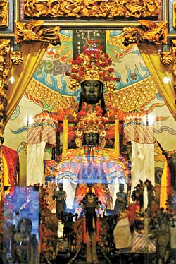

供 奉 神 祇
- 霞海城還廟
- 護國禪寺
- 劍潭古寺
- 關渡宮
- 天后宮
- 慈祐宮
- 保安宮
- 青山宮
- 奉天宮
- 清真寺
- 福佑宮
- 碧山巖
霞海城隍爺
城隍又稱城隍爺、城隍老爺。城隍二字原意為城池，城指城郭，隍為繞城之河溝，有水稱池，無水稱隍，是城隍原指城郭溝池而言。至唐代則更普遍，有祭城隍文。後唐清泰間封城隍為王，明太祖初封京師城隍為帝，開封、臨濠、東河、平滁四地城隍為王，各府城隍為威靈公，各州城隍為綏靖侯，各縣城隍為顯佑伯，洪武三年去其號，京師稱都城隍，餘如府城隍、縣城隍。
釋迦佛祖
釋迦牟尼，原名悉達多•喬達摩，古印度釋迦族人，生於現在尼泊爾的南部，佛教創始人。稱為佛陀後被尊稱為釋迦牟尼，佛陀（Buddha）的意思是「覺悟者」，也就是徹底覺悟宇宙和生命真相的人；在民間信仰中也常稱呼為佛祖。
觀音菩薩
觀世音菩薩，又譯為觀自在菩薩、光世音菩薩，西方極樂世界教主阿彌陀佛座下的上首菩薩，同大勢至菩薩一起，為阿彌陀佛的左、右脅侍菩薩，並稱「西方三聖」。同時祂也是四大菩薩之一。
觀世音菩薩是東亞民間普遍敬仰崇拜的菩薩，在各種佛教圖像或造像中觀世音菩薩像也最為常見，而且種類繁多，變化極大。觀世音菩薩是中國民間信仰所崇信的「家堂五神」的首尊，台灣民眾常將之繪製於家堂神畫「佛祖漆」上，與自家所祀神明一同，晨昏祭祀。
天上聖母
媽祖是以中國東南沿海為中心、包括東亞（琉球、日本、韓國及東南亞）海洋地區的海神信仰，又稱天上聖母、天后、天后娘娘、天妃、天妃娘娘、湄洲娘媽等。
相傳媽祖姓林，名默，又稱默娘，出生於宋太祖建隆元年（或曰五代末年）福建省泉州府莆田縣湄洲島（宋太宗年間改為興化軍），一出生則不哭不鬧，因而取名為默，小名默娘。媽祖是從中國閩越地區的巫覡信仰演化而來，在發展過程中吸收了其他民間信仰（千里眼順風耳）。隨著影響力的擴大，又納入儒家、佛教和道教的因素，最後逐漸從諸多海神中脫穎而出，成為閩台海洋文化及東亞海洋文化的重要元素。
天上聖母
媽祖是以中國東南沿海為中心、包括東亞（琉球、日本、韓國及東南亞）海洋地區的海神信仰，又稱天上聖母、天后、天后娘娘、天妃、天妃娘娘、湄洲娘媽等。
相傳媽祖姓林，名默，又稱默娘，出生於宋太祖建隆元年（或曰五代末年）福建省泉州府莆田縣湄洲島（宋太宗年間改為興化軍），一出生則不哭不鬧，因而取名為默，小名默娘。
媽祖是從中國閩越地區的巫覡信仰演化而來，在發展過程中吸收了其他民間信仰（千里眼順風耳）。隨著影響力的擴大，又納入儒家、佛教和道教的因素，最後逐漸從諸多海神中脫穎而出，成為閩台海洋文化及東亞海洋文化的重要元素。
天上聖母
媽祖是以中國東南沿海為中心、包括東亞（琉球、日本、韓國及東南亞）海洋地區的海神信仰，又稱天上聖母、天后、天后娘娘、天妃、天妃娘娘、湄洲娘媽等。
相傳媽祖姓林，名默，又稱默娘，出生於宋太祖建隆元年（或曰五代末年）福建省泉州府莆田縣湄洲島（宋太宗年間改為興化軍），一出生則不哭不鬧，因而取名為默，小名默娘。
媽祖是從中國閩越地區的巫覡信仰演化而來，在發展過程中吸收了其他民間信仰（千里眼順風耳）。隨著影響力的擴大，又納入儒家、佛教和道教的因素，最後逐漸從諸多海神中脫穎而出，成為閩台海洋文化及東亞海洋文化的重要元素。

保生大帝
保生大帝為中國閩南、潮汕地區及台灣、東南亞華人所信奉的醫神，俗稱「大道公」、「吳真人」、「花橋公」。
據文獻記載，保生大帝為北宋閩南人士，本名吳夲（「夲」音ㄊㄠ滔非「本」字），生於979年（宋太宗太平興國四年）三月十五日，卒於1036年（宋仁宗景佑三年）五月初二，登山採藥時，失足落崖，享年五十八歲。家鄉為福建泉州同安明盛鄉積善里白礁村，今屬漳州市龍海縣角美鎮。
靈安尊王
青山王，全稱青山靈安尊王，是福建泉州三邑惠安縣青山的守護神，不僅有山神、行政神的神格，也頗具司法神的職能，相當於三邑的城隍爺，故青山王配祀有判官、陰陽司等諸司幕僚、范謝將軍等神，也常常有出巡、暗訪等活動，主要目的就是明察轄區善惡，緝捕惡鬼凶神，日本學者鈴木清一郎在《臺灣舊慣冠婚葬祭與年中行事》，指出青山王有代天巡狩的職能，亦與王爺信仰有關。隨著泉州三邑移民在臺灣的開墾，台灣的青山王信仰也日益擴大，其最有名的廟宇是臺北市的艋舺青山宮。
玉皇上帝
玉皇上帝，又稱玉皇大帝、玉皇、玉帝、玉皇大天尊、天公，是道教中的天界的實際領導者，也是地位最高的神之一。
在中國民間信仰中，玉皇上帝俗稱「天」、「天公」、「上天」、「蒼天」、「老天」、「老天爺」等。《玉皇經》講述玉皇遠古時期「捨身堵北缺，代存萬眾生」的故事。玉皇大帝是神界皇帝、天庭之元首；在道教神系中是天界地位最高的神之一，地位僅次於三清，為三清所化生出之先天尊神，而在太極界統轄宇宙眾神，四御之一。
阿拉真神
阿拉或真主（阿拉伯語：الله， Allāh），是阿拉伯語言使用者稱呼「神」的讀音，包括阿拉伯基督教徒、猶太教徒和穆斯林都如是稱呼上帝，中文音譯為安拉或阿拉。穆斯林，即伊斯蘭教的信徒，只信奉阿拉為自己的主。雖然猶太教、基督教、伊斯蘭教三種宗教教義不同，甚至會彼此攻訐仇視，但基於一神教的屬性，還有伊斯蘭教將摩西、亞倫、耶穌、穆罕默德均視為神派到人世間的先知的這種觀點，可以確定伊斯蘭教說的阿拉和猶太教、基督教的耶和華，其實指的都是同一個神。這三種宗教均被認為屬於沙漠一神諸教。
福德正神
土地神，又有各種稱謂包括 伯公、大伯公、福德正神、福德老爺、土地公公、土地伯公、福德公、土地公、土地爺、福德、土公、土地、土伯、土正、社神、社公、社官等。地神乃中國民間信仰普遍的神之一，主要流行於漢族地區，部分受漢文化影響的民族也有信仰。土地神屬於民間信仰中的地方保護神，是具有福德的善鬼神；在中國大陸，中華民國時期及之前，凡有漢人群居住的地方就有供奉土地神的情景。在中國傳統文化中，祭祀土地神即祭祀大地，現代多屬於祈福、求財、保平安、保農業收成之意。
開漳聖王
陳元光（657年－711年），字廷炬，號龍湖，唐朝將領，曾任刺史兼任漳浦縣令。光州固始（今河南省固始縣）人。墓呈圓丘形，墓前碑文為：「唐開漳陳將軍墓」。漳州河洛族群與佘族史上的關鍵人物 。福建漳州人與臺灣和新加坡的漳州移民後代，均尊稱其為開漳聖王。